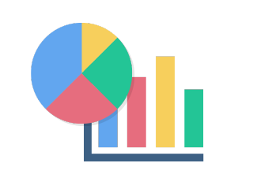
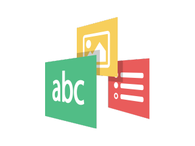
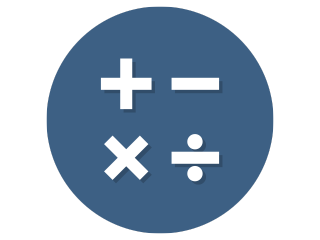
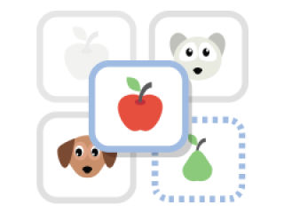
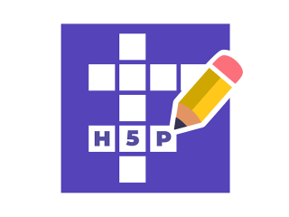
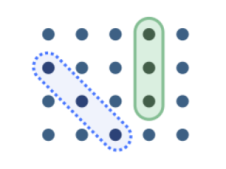

Comece pelo objetivo de aprendizagem. Os grupos indicam a finalidade predominante; um recurso pode atender a vários objetivos.
Selecione o nome de um recurso para abrir sua página oficial com descrição e demonstrações.
Como ler este guia
As classificações ajudam a identificar como cada recurso pode contribuir para seu objetivo pedagógico.
Adequado
Oferece funcionalidades diretamente relacionadas ao objetivo, conforme as condições descritas na tabela.
Condicional
Pode atender ao objetivo, mas depende de atividades específicas, orientação do professor ou complementação.
Não oferece diretamente
Precisa ser combinado com outra ferramenta ou atividade para atender ao objetivo.
A classificação indica a adequação ao objetivo, não a qualidade do recurso. A aprendizagem depende do planejamento e da tarefa proposta.
Apresentar e explorar
17 recursos
Organizar explicações, explorar imagens e estudar conteúdos multimídia.
| Recurso e demonstração | Facilidade de criação | Apresentação de informações | Prática e feedback | Avaliação da aprendizagem | Taxonomia de Bloom: possibilidades | Exemplo pedagógico |
|---|---|---|---|---|---|---|
| Simples Basta inserir títulos e textos, organizando o conteúdo em painéis expansíveis. | Adequado Explicações em tópicos. | Não oferece diretamente Sem exercícios ou verificação de respostas. | Não oferece diretamente Requer atividade complementar. | Relembrar, compreender. | Apresentar conceitos de avaliação diagnóstica, formativa e somativa. | |
| Simples Escolha uma imagem, marque os pontos de interesse e acrescente as informações de cada ponto. | Adequado Informações associadas a partes da imagem. | Condicional Exploração orientada, sem correção de respostas. | Não oferece diretamente Os pontos informativos não verificam aprendizagem. | Compreender, analisar. | Explorar espaços de uma escola e suas funções pedagógicas. | |
| Intermediária Requer organizar os acontecimentos por data e inserir os textos e as mídias correspondentes. | Adequado Organização cronológica. | Condicional Apoia tarefas de comparação e interpretação. | Não oferece diretamente Requer questões ou produção complementar. | Relembrar, compreender, analisar. | Explorar marcos da história da educação brasileira. | |
| Simples Basta inserir duas imagens e suas legendas. Escolha imagens com enquadramentos que facilitem a comparação. | Adequado Comparação por controle deslizante. | Condicional Observação guiada, sem correção automática. | Não oferece diretamente Requer registro das conclusões em outra atividade. | Compreender, analisar. | Comparar uma sala antes e depois de uma intervenção. | |
| Intermediária Requer montar os slides e configurar as interações. O trabalho aumenta conforme a quantidade de atividades. | Adequado Conteúdo organizado em slides. | Adequado Quando inclui exercícios e devolutivas. | Adequado Quando inclui questões avaliativas. | Compreender, aplicar, analisar. | Apresentar teorias da aprendizagem com situações para interpretação. | |
| Intermediária a complexa Requer organizar páginas e combinar conteúdos e atividades. Livros com muitas interações exigem mais planejamento. | Adequado Conteúdo organizado em páginas. | Adequado Quando inclui exercícios. | Adequado Conforme as atividades inseridas. | Compreender, aplicar, analisar. | Criar uma unidade sobre planejamento pedagógico com leituras e exercícios. | |
| Intermediária Com o vídeo preparado, escolha os momentos de pausa e configure as perguntas e demais interações. | Adequado Explicações audiovisuais enriquecidas. | Adequado Perguntas e retomada de trechos. | Adequado Quando inclui questões avaliativas. | Compreender, aplicar, analisar. | Analisar uma situação de sala de aula com perguntas durante o vídeo. | |
| Sequência comparativa de imagensAgamotto | Intermediária Requer preparar imagens que possam ser comparadas, ordenar a sequência e acrescentar explicações. | Adequado Comparação gradual de imagens por controle deslizante. | Condicional Exploração guiada, sem correção de respostas. | Não oferece diretamente Requer atividade complementar. | Compreender, analisar. | Comparar camadas de um mapa para explicar mudanças na ocupação do território. |
| Página com conteúdos combinadosPage (Column) | Intermediária Reúna textos, mídias e atividades em uma página. Cada atividade incluída precisa de sua própria configuração. | Adequado Reúne conteúdos sobre um mesmo tema. | Adequado Quando inclui exercícios e devolutivas. | Adequado Conforme as questões inseridas. | Compreender, aplicar, analisar. | Reunir uma leitura sobre inclusão e questões de análise de um caso escolar. |
 GráficoChart | Simples Basta escolher o tipo de gráfico e preencher os rótulos e os valores. | Adequado Apresenta dados em gráficos de barras ou setores. | Condicional Apoia interpretação orientada, sem verificar respostas. | Não oferece diretamente Requer questões ou registro das conclusões. | Compreender, analisar. | Comparar dados de frequência escolar e explicar diferenças entre turmas. |
| Galeria de imagensImage Slider | Simples Basta inserir as imagens, definir sua ordem e escrever os textos alternativos. | Adequado Apresenta imagens navegáveis, inclusive em tela cheia. | Condicional Depende de uma tarefa de observação orientada. | Não oferece diretamente Requer atividade complementar. | Compreender, analisar. | Observar registros de uma experiência e descrever as mudanças percebidas. |
| Colagem de imagensCollage | Simples Escolha um modelo de composição, insira as imagens e ajuste seus enquadramentos. | Adequado Organiza imagens em uma composição visual. | Condicional Apoia comparação orientada, sem correção automática. | Não oferece diretamente Requer atividade complementar. | Compreender, analisar. | Comparar imagens de espaços escolares e identificar características de acessibilidade. |
 Apresentação com transições 3DImpressive Presentation (ALPHA) | Complexa Exige organizar cenas e ajustar movimentos de câmera e transições. Reserve tempo para testar o recurso experimental. | Adequado Apresenta textos e imagens em um percurso com transições 3D. | Condicional Depende de interações incluídas e da disponibilidade na instalação. | Condicional Depende das atividades inseridas; testar a versão experimental. | Compreender, analisar. | Apresentar relações entre conceitos de um projeto, com perguntas de interpretação. |
| Calendário de conteúdosAdvent Calendar (beta) | Intermediária Requer preparar o conteúdo de cada porta e configurar as datas de abertura. Reserve tempo para testar a versão beta. | Adequado Distribui textos, imagens, áudios, vídeos e links em portas. | Condicional Depende das tarefas propostas nos conteúdos vinculados. | Não oferece diretamente O calendário não verifica respostas diretamente. | Relembrar, compreender. | Organizar um calendário de leituras e pequenas tarefas de revisão. |
| Incorporar conteúdo externoIframe Embedder | Intermediária Requer inserir o endereço ou pacote da aplicação e testar se o conteúdo permite incorporação e funciona no ambiente. | Adequado Exibe conteúdos ou aplicações incorporados. | Condicional Depende das funções da aplicação incorporada. | Condicional Depende da aplicação; a incorporação não garante notas ou acompanhamento. | Compreender, aplicar, analisar. | Incorporar uma simulação e pedir que o estudante explique os resultados. |
| Painel de informações pesquisávelInformation Wall | Simples Defina o modelo dos itens e preencha os textos, acrescentando imagens quando necessário. | Adequado Organiza informações em itens com busca. | Condicional Apoia tarefas de pesquisa e comparação orientadas. | Não oferece diretamente Requer questões ou produção complementar. | Compreender, analisar. | Consultar um painel de metodologias e comparar duas propostas para uma turma. |
| Código QRKewAr Code | Simples Basta informar o endereço ou os dados e escolher a ação do código. Teste a leitura antes de disponibilizá-lo. | Condicional Dá acesso a informações, links ou outros conteúdos. | Condicional Depende da atividade acessada pelo código. | Não oferece diretamente O código QR não verifica aprendizagem. | Relembrar, compreender. | Disponibilizar códigos QR para acessar materiais de uma exposição escolar. |
Praticar e revisar
17 recursos
Recuperar informações, estabelecer associações e organizar sequências.
| Recurso e demonstração | Facilidade de criação | Apresentação de informações | Prática e feedback | Avaliação da aprendizagem | Taxonomia de Bloom: possibilidades | Exemplo pedagógico |
|---|---|---|---|---|---|---|
| Simples Basta preencher a frente e o verso dos cartões com o conteúdo de estudo. | Adequado Conceitos e explicações breves. | Adequado Revisão com revelação da resposta. | Condicional Autoavaliação: virar o cartão não comprova domínio. | Relembrar, compreender. | Revisar autores e conceitos de Psicologia da Aprendizagem. | |
| Simples Insira as perguntas e as respostas esperadas. Confira a correção com exemplos de respostas dos estudantes. | Condicional Informações contextualizam a pergunta. | Adequado Resposta digitada com verificação. | Adequado Verifica respostas curtas previamente definidas. | Relembrar, compreender. | Identificar um conceito a partir de uma descrição ou imagem. | |
| Intermediária Requer posicionar os elementos, criar as áreas de destino e configurar as associações corretas. | Condicional Conteúdo contextualiza as associações. | Adequado Associação e classificação com verificação. | Adequado Verifica as associações realizadas. | Compreender, aplicar, analisar. | Classificar práticas docentes segundo diferentes abordagens pedagógicas. | |
| Simples Insira o texto e marque as palavras que o estudante deverá arrastar para as lacunas. | Condicional Conteúdo em um texto incompleto. | Adequado Preenchimento com opções disponíveis. | Adequado Verifica a posição das palavras. | Relembrar, compreender, aplicar. | Completar uma síntese sobre desenvolvimento infantil. | |
| Simples Basta inserir os trechos na ordem correta; planeje uma sequência com sentido claro para o estudante. | Condicional Informações distribuídas nos trechos. | Adequado Reordenação com verificação. | Adequado Verifica a sequência construída. | Compreender, aplicar, analisar. | Organizar etapas de uma investigação ou a sequência de um argumento. | |
| Intermediária Requer selecionar imagens que representem uma sequência e definir a ordem correta. | Condicional Informações representadas visualmente. | Adequado Ordenação de imagens conforme uma tarefa. | Adequado Verifica a sequência. | Relembrar, compreender, aplicar, analisar. | Ordenar imagens de etapas de uma experiência científica. | |
| Simples Basta inserir as imagens e definir os pares que o estudante deverá encontrar. | Condicional Explicações ao encontrar os pares. | Adequado Reconhecimento e associação visual. | Condicional Encontrar pares oferece evidência limitada de compreensão conceitual. | Relembrar, compreender. | Associar imagens de materiais didáticos e revisar suas características. | |
| Escrita e documentação orientadasDocumentation Tool | Intermediária Requer planejar as etapas de escrita e configurar os campos, as metas e a autoavaliação. | Adequado Orienta a produção por etapas. | Condicional Apoia escrita e autoavaliação, sem correção automática do texto. | Condicional O documento produzido requer critérios e análise docente. | Aplicar, analisar, avaliar, criar. | Elaborar um plano de intervenção, definir metas e registrar uma autoavaliação. |
 Exercícios de aritméticaArithmetic Quiz | Simples Basta escolher a operação e a quantidade de questões; os exercícios são gerados automaticamente. | Condicional As operações constituem o contexto das questões. | Adequado Gera questões de adição, subtração, multiplicação ou divisão. | Adequado Verifica resultados; pontuação e tempo não explicam o raciocínio. | Relembrar, aplicar. | Praticar multiplicações e discutir depois as estratégias de cálculo utilizadas. |
| DitadoDictation | Intermediária Requer preparar os áudios, inserir as transcrições e ajustar os critérios de correção. | Condicional Apresenta enunciados em áudio. | Adequado Compara a transcrição com respostas previamente definidas. | Adequado Verifica a escrita conforme os critérios configurados. | Relembrar, compreender, aplicar. | Ouvir frases em língua estrangeira e transcrevê-las com atenção à ortografia. |
| Descobrir e revelar a respostaGuess the Answer | Simples Basta inserir uma imagem, escrever a descrição e definir a resposta que será revelada. | Adequado Apresenta uma imagem e uma explicação ao revelar a resposta. | Adequado Permite formular uma hipótese e compará-la com a resposta. | Condicional Autoavaliação; revelar a resposta não comprova domínio. | Relembrar, compreender. | Identificar uma estrutura em uma imagem e comparar a hipótese com a explicação. |
 Associar pares de imagensImage Pairing | Simples Basta inserir as imagens e definir as associações corretas entre elas. | Condicional As imagens contextualizam as relações. | Adequado Permite associar imagens por clique ou arraste. | Adequado Verifica os pares definidos pelo professor. | Relembrar, compreender, analisar. | Associar uma ferramenta de laboratório à imagem de sua aplicação. |
| Gravador de áudioAudio Recorder | Simples A preparação se concentra nas orientações da atividade e no teste de acesso ao microfone. | Condicional A atividade precisa de um enunciado contextualizador. | Condicional Permite gravar e ouvir a própria voz, sem correção automática. | Condicional O áudio pode ser baixado; entrega e avaliação exigem atividade complementar. | Aplicar, avaliar, criar. | Gravar uma explicação oral e revisar a clareza antes de entregar o arquivo. |
| Anotações pelo método CornellCornell Notes | Intermediária Requer selecionar o material de estudo e preparar orientações para as anotações e a síntese. | Adequado Associa material de estudo a anotações estruturadas. | Condicional Orienta registro e síntese, sem avaliar automaticamente o conteúdo. | Condicional As anotações requerem análise docente; conferir salvamento do estado. | Compreender, analisar, criar. | Registrar ideias principais e perguntas de uma aula e elaborar uma síntese. |
 Palavras cruzadasCrossword | Intermediária Requer cadastrar palavras e pistas, configurar a pontuação e conferir a grade gerada. | Condicional As pistas contextualizam os termos. | Adequado Permite completar palavras a partir de pistas, inclusive multimídia. | Adequado Verifica as palavras previstas, conforme os critérios configurados. | Relembrar, compreender, aplicar. | Resolver pistas sobre conceitos de avaliação e discutir seus significados. |
 Caça-palavrasFind the words | Simples Basta inserir a lista de palavras e ajustar as opções da grade. | Condicional Apresenta os termos procurados. | Adequado Exercita o reconhecimento de palavras na grade. | Condicional Localizar termos oferece evidência limitada de compreensão. | Relembrar. | Localizar termos de ecologia e depois explicar cada um em outra atividade. |
| Roteiro para escrita estruturadaStructure Strip | Intermediária Requer definir as partes do texto, escrever as orientações e ajustar a proporção destinada a cada parte. | Adequado Apresenta orientações para cada parte de uma produção textual. | Condicional Apoia a organização e a extensão do texto, sem avaliar sua qualidade. | Condicional A produção requer critérios e análise docente. | Aplicar, analisar, criar. | Escrever um argumento com introdução, evidências e conclusão seguindo o roteiro. |
Responder questões
16 recursos
Verificar conhecimentos, interpretar situações e receber retorno sobre respostas.
| Recurso e demonstração | Facilidade de criação | Apresentação de informações | Prática e feedback | Avaliação da aprendizagem | Taxonomia de Bloom: possibilidades | Exemplo pedagógico |
|---|---|---|---|---|---|---|
| Intermediária Requer criar as questões, configurar as respostas e preparar as devolutivas de cada atividade. | Condicional Textos e mídias contextualizam as questões. | Adequado Exercícios em sequência com devolutivas. | Adequado Reúne diferentes tipos de questões. | Relembrar, compreender, aplicar, analisar, avaliar. | Elaborar uma revisão com conceitos e estudos de caso. | |
| Simples Preencha o enunciado e as alternativas, marque as respostas corretas e escreva as devolutivas. | Condicional Informações no enunciado e nas devolutivas. | Adequado Seleção de alternativas com retorno. | Adequado Verifica uma ou mais alternativas corretas. | Relembrar, compreender, aplicar, analisar, avaliar. | Selecionar a intervenção mais adequada para uma situação escolar. | |
| Simples Basta escrever a afirmação, indicar se é verdadeira ou falsa e preparar a explicação da resposta. | Condicional Afirmação e explicação complementar. | Adequado Julgamento de afirmações com retorno. | Adequado Verifica a resposta escolhida. | Relembrar, compreender, analisar. | Julgar afirmações sobre princípios da educação inclusiva. | |
| Simples Insira o texto, marque as lacunas e defina as respostas aceitas em cada uma. | Condicional Conteúdo em texto incompleto. | Adequado Respostas digitadas com verificação. | Adequado Verifica palavras ou expressões previstas. | Relembrar, compreender, aplicar. | Completar definições a partir do contexto. | |
| Simples Basta inserir o texto e marcar as palavras que deverão ser identificadas pelo estudante. | Condicional Texto como base da tarefa. | Adequado Seleção de palavras com verificação. | Adequado Verifica os termos identificados. | Relembrar, compreender, analisar. | Identificar palavras que expressam determinado conceito em um trecho. | |
| Intermediária Requer elaborar conjuntos de afirmações e definir a opção correta de cada conjunto para compor a síntese. | Adequado A seleção correta compõe uma síntese. | Adequado Escolha das afirmações pertinentes. | Adequado Verifica escolhas; útil para avaliação formativa. | Compreender, analisar. | Construir uma síntese sobre avaliação formativa escolhendo afirmações corretas. | |
| Produção textual com retorno por palavras-chaveEssay | Intermediária Requer escrever o enunciado, definir palavras-chave e preparar as devolutivas. Teste o retorno com diferentes textos. | Condicional Enunciado e feedback contextualizam a escrita. | Adequado Oferece retorno conforme palavras-chave presentes ou ausentes. | Condicional A análise por palavras-chave não avalia integralmente a qualidade do texto. | Compreender, analisar, avaliar, criar. | Escrever uma proposta de intervenção e revisar o texto a partir das devolutivas e da avaliação docente. |
| Conjunto de questões de resposta únicaSingle Choice Set | Simples Insira as perguntas e as alternativas, indicando uma resposta correta em cada questão. | Condicional Informações contextualizam as questões. | Adequado Apresenta questões em sequência com retorno imediato. | Adequado Verifica a alternativa escolhida em cada questão. | Relembrar, compreender, aplicar, analisar, avaliar. | Escolher uma intervenção para cada situação escolar de uma sequência de casos. |
| Lacunas com feedback específicoComplex fill the blanks (Advanced Fill in the Blanks) | Intermediária Requer configurar as lacunas, as respostas aceitas e as devolutivas específicas para as respostas previstas. | Condicional O texto fornece contexto para as respostas. | Adequado Permite digitação ou opções em lista e feedback específico por resposta. | Adequado Verifica respostas conforme as alternativas configuradas. | Relembrar, compreender, aplicar, analisar. | Completar frases em língua estrangeira e revisar escolhas com dicas sobre tempos verbais. |
| Encontrar vários pontos na imagemFind Multiple Hotspots | Intermediária Requer marcar as regiões da imagem, definir quais são corretas e preparar as devolutivas para as seleções. | Condicional A imagem contextualiza a questão. | Adequado Oferece feedback para as regiões selecionadas. | Adequado Verifica os pontos encontrados conforme a quantidade exigida. | Relembrar, compreender, aplicar, analisar. | Identificar riscos em uma imagem de laboratório e analisar as devolutivas. |
| Encontrar um ponto na imagemFind the Hotspot | Intermediária Requer escolher a imagem, delimitar as regiões de resposta e configurar as devolutivas. | Condicional A imagem contextualiza a tarefa. | Adequado Oferece retorno sobre a região selecionada. | Adequado Verifica se o ponto selecionado corresponde à resposta esperada. | Relembrar, compreender, aplicar, analisar. | Localizar uma estrutura em uma imagem científica a partir de sua função. |
| Escolha com alternativas multimídiaMultimedia Choice | Simples Insira o enunciado e as imagens das alternativas, indicando quais respostas são corretas. | Condicional As alternativas visuais contextualizam a questão. | Adequado Permite selecionar uma ou mais alternativas visuais. | Adequado Verifica as alternativas previamente definidas. | Relembrar, compreender, aplicar, analisar. | Selecionar imagens que representam práticas acessíveis em sala de aula. |
| Questionário de perfisPersonality Quiz | Intermediária Requer criar os perfis, elaborar as perguntas e associar cada alternativa aos perfis correspondentes. | Condicional Apresenta perguntas e uma descrição do perfil resultante. | Condicional Pode apoiar reflexão; o perfil não indica acerto ou erro. | Não oferece diretamente Classifica respostas em perfis, sem comprovar aprendizagem. | Compreender, avaliar. | Promover uma reflexão sobre preferências de estudo, sem tratar o resultado como diagnóstico. |
| Questionário de respostas e opiniõesQuestionnaire | Intermediária Requer elaborar as perguntas e planejar como coletar as respostas. A coleta via xAPI/LRS exige configuração adicional. | Condicional Enunciados contextualizam a coleta de respostas. | Condicional Coleta respostas; devolutiva pedagógica requer análise posterior. | Condicional Respostas precisam de análise e infraestrutura para coleta; não pressupõe correção automática. | Compreender, analisar, avaliar. | Coletar percepções sobre uma sequência de aulas e analisar sugestões de melhoria. |
| Resposta por vozSpeak the Words | Simples Insira a pergunta e as respostas aceitas. Teste o microfone e o reconhecimento de voz no navegador utilizado. | Condicional O enunciado contextualiza a resposta oral. | Adequado Reconhece uma resposta falada e compara com as respostas previstas. | Condicional Depende do reconhecimento de voz; não avalia integralmente a pronúncia. | Relembrar, compreender, aplicar. | Responder oralmente ao nome de um objeto em língua estrangeira. |
| Conjunto de respostas por vozSpeak the Words Set | Intermediária Requer montar a sequência de perguntas e respostas aceitas e testar o reconhecimento de voz no navegador utilizado. | Condicional Os enunciados contextualizam as perguntas. | Adequado Reúne tarefas respondidas por reconhecimento de voz. | Condicional Verifica respostas reconhecidas; o resultado depende do reconhecimento de voz. | Relembrar, compreender, aplicar. | Responder oralmente a uma sequência de perguntas sobre vocabulário. |
Simular e tomar decisões
4 recursos
Organizar percursos, explorar ambientes e trabalhar escolhas contextualizadas.
| Recurso e demonstração | Facilidade de criação | Apresentação de informações | Prática e feedback | Avaliação da aprendizagem | Taxonomia de Bloom: possibilidades | Exemplo pedagógico |
|---|---|---|---|---|---|---|
| Complexa Exige planejar os caminhos, configurar decisões e desfechos e testar os diferentes percursos. | Adequado Conteúdo conforme o percurso. | Adequado Escolhas com consequências e devolutivas. | Adequado Quando há critérios de pontuação definidos. | Aplicar, analisar, avaliar. | Simular decisões de um professor diante de situações de conflito. | |
| Intermediária a complexa Requer preparar as imagens, conectar as cenas e configurar as interações. O trabalho aumenta com a extensão do percurso. | Adequado Exploração de ambientes com multimídia. | Condicional Depende das questões e tarefas incluídas. | Condicional Depende das interações avaliativas inseridas. | Compreender, aplicar, analisar. | Explorar uma escola e identificar barreiras à participação dos estudantes. | |
| Complexa Exige planejar o percurso, preparar as atividades e configurar as conexões e as regras de avanço. | Adequado Conteúdos em um percurso visual. | Adequado Quando as etapas contêm desafios. | Condicional Depende dos conteúdos inseridos nas etapas. | Compreender, aplicar, analisar, avaliar. | Criar uma trilha de desafios sobre patrimônio cultural e educação. | |
| Exploração com realidade aumentadaAR Scavenger | Complexa Exige preparar marcadores, associar modelos 3D ou atividades e testar o uso da câmera. Reserve tempo para testar a versão beta. | Adequado Associa marcadores físicos a modelos 3D ou atividades. | Condicional Depende das atividades acionadas pelos marcadores. | Condicional Depende dos exercícios incluídos e das condições de acesso. | Compreender, aplicar, analisar. | Explorar marcadores em uma exposição e resolver desafios sobre os objetos. |
Como interpretar o guia
- Facilidade de criação: estimativa do trabalho do professor para preparar o conteúdo, incluindo seleção de mídias e planejamento. Não é uma medida da dificuldade para o estudante.
- Taxonomia de Bloom: as indicações são possibilidades, não limites da ferramenta. A exigência cognitiva depende do conteúdo, do enunciado e da tarefa. Criar um material H5P é uma ação do autor; não significa que o estudante mobilizará automaticamente o processo de criar.
- Prática e feedback: verificar uma resposta pode oferecer apenas indicação de acerto ou erro. Planeje devolutivas que expliquem o raciocínio e ajudem em uma nova tentativa.
- Avaliação e notas: possibilidade de verificar respostas, relatório de tentativas e registro de nota são aspectos distintos. No Moodle, o acompanhamento depende do tipo de conteúdo, da integração e das configurações da atividade.
- Uso combinado: uma exploração no H5P pode ser seguida de debate no Fórum ou de produção entregue pela Tarefa.
- Acessibilidade: confira a interação e a versão utilizada, o acesso pelo teclado, as descrições das imagens e as legendas dos vídeos. As cores deste guia são acompanhadas de símbolos e textos.
Fontes e critérios da proposta
Funcionalidades consultadas na documentação oficial do H5P e na documentação da atividade H5P no Moodle. A seleção abrange 54 recursos e não representa o catálogo completo. A disponibilidade depende da instalação.
Os agrupamentos, exemplos, estimativas de facilidade e classificações pedagógicas são uma proposta editorial do guia, não uma classificação oficial do H5P. Data da consulta: 30 de setembro de 2026.
Referência para a organização em matriz: Guia de Ferramentas Moodle para Professores e Educadores, disponibilizado por Nicolas Martignoni, baseado na ideia de Joyce Seitzinger, com tradução e adaptação brasileira de Gilvan Marques. Os textos e a matriz deste guia H5P foram elaborados para esta proposta.